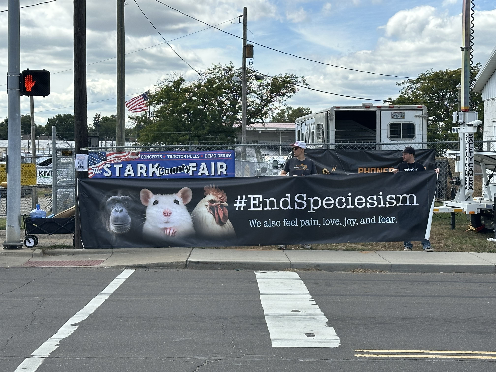
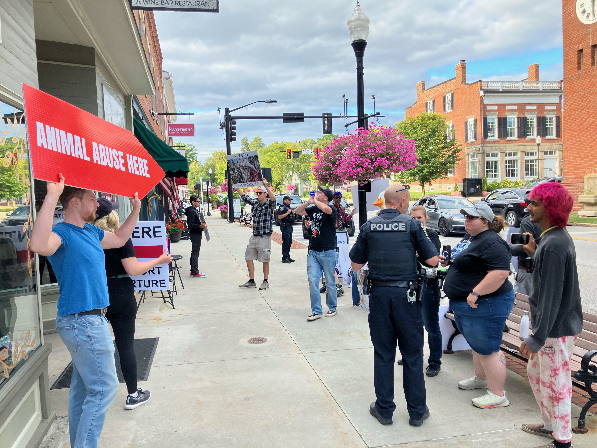
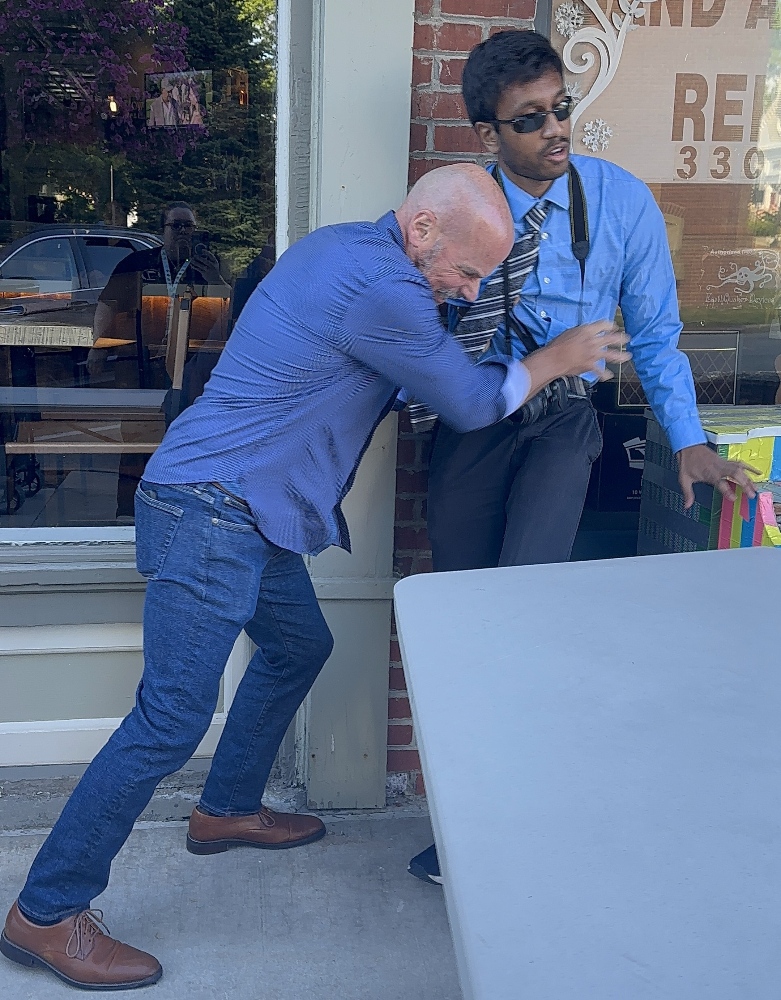
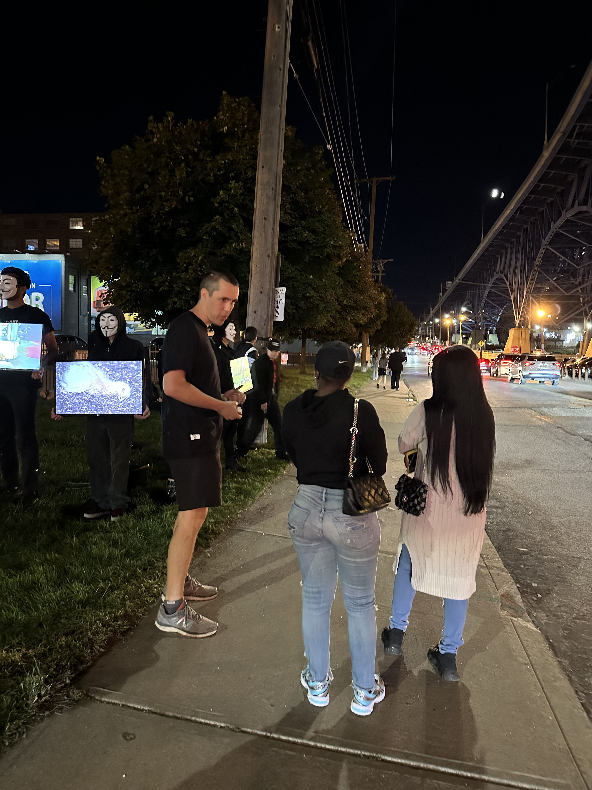
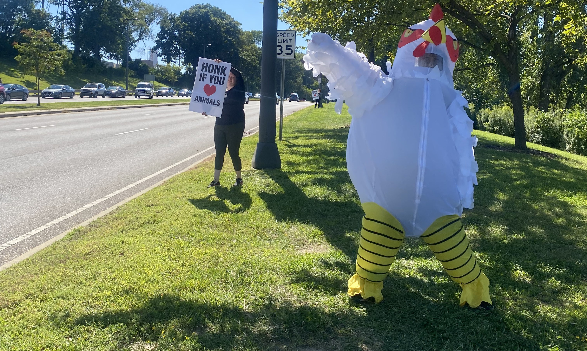

Overview
2025 was a wild year, with multiple charges filed against our activists for utter nonsense as a salty prosecutor tried to silence our legally-protected first amendment activities (she failed).
August 29th
Case Farms vigil
Case Farms is a poultry "processing" plant, aka murder house. We held a vigil for all the chickens whose lives are taken from them.

Stark County Fair protest
We protested the Stark County Fair, which is not so fair for the animals. We also chalked, a legal activity.

Downtown 140 protest #1
Downtown 140 is a restaurant that serves the cruel dish of foie gras, made from the livers of force-fed ducks and geese. The restaurant owner, Andy Lowrey, got in the faces of one of our activists and lied about being assaulted. We also chalked, a legal activity.

August 30th
Marriott protest
We protested outside the Marriott Hotel, who had promised to go cage-free but had not followed through.

PBT 100 Cafés
We outreached dozens of restaurants, asking them to endorse the Plant Based Treaty.
Downtown 140 protest #2
On the second Downtown 140 protest, multiple of our activists got assaulted by Andy Lowrey, the restaurant owner. One activist was charged with disorderly conduct for being assaulted and the other was about to be as well but it was dropped. We also chalked, a legal activity.

Cube of Truth
We did an Anonymous for the Voiceless Cube of Truth, holding non-vegans accountable.

August 31st

Honk if you love animals
We did a fun little "trick" on cars driving by, telling them to honk if they love animals, only to turn the signs around to say "Go Vegan." We also had an activist dance around in a chicken suit.

Downtown 140 protest #3
Andy Lowrey closed the front doors that day! So we protested on the backside, which was still open.

September 1st (extracurricular)
Downtown 140 chalking
While this wasn't an Ohio Occurrence official event, three activists went back to chalk the sidewalk (a legal activity) before going home. These three activists were charged with Criminal Mischief, a third degree misdemeanor with a penalty up to 60 days in jail, for chalking the public sidewalk. Hudson, being a small, rural, conservative town, attempted to silence protesters through bogus criminal charges. It didn't work. The charges were dropped against one activist and the other two were found Not Guilty by a jury, despite admitting to everything they were accused of doing (since chalking is not a fucking crime).